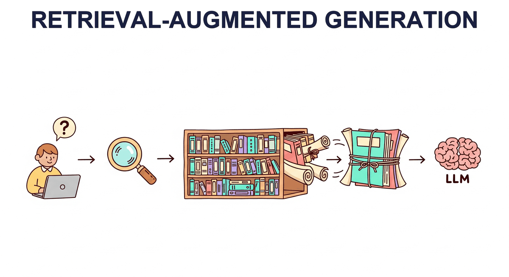

"The best answer is not always inside the model. Sometimes the smartest thing an AI can do is look it up."
RAG, Bookishly Wise AI Agent

You can find relevant chunks (Chapter 22). Now you feed them to an LLM. This chapter is retrieval-augmented generation: the architecture, the failure modes (lost-in-the-middle, irrelevant retrievals, conflicting sources), the advanced patterns (HyDE, multi-query, query rewriting, reranking, parent-doc retrieval), and when long-context windows make RAG obsolete (rarely, it turns out).
Chapter Overview
Large language models are powerful generators but inherently limited by their training data cutoff, their tendency to hallucinate, and the impossibility of encoding all world knowledge in model parameters. Retrieval-Augmented Generation (RAG) addresses these limitations by connecting LLMs to external knowledge sources at inference time, grounding responses in retrieved evidence rather than relying solely on parametric memory. Building on the embedding and vector database foundations from Chapter 22, RAG closes the gap between static model knowledge and dynamic, real-world information.
This chapter covers the complete RAG landscape, from fundamental architectures through advanced retrieval techniques. You will learn how to build ingestion pipelines, implement query transformations, combine dense and sparse retrieval, and leverage knowledge graphs for structured reasoning. The chapter also explores agentic RAG systems that can decompose complex queries, perform iterative research, and synthesize information from multiple sources.
On the structured data side, you will learn how LLMs can query databases through text-to-SQL, process tabular data, and combine structured and unstructured retrieval. Finally, the chapter surveys the major RAG frameworks (LangChain, LlamaIndex, Haystack) that provide production-ready tooling for building retrieval-augmented applications.
Retrieval-augmented generation is one of the most widely deployed LLM patterns in production. By combining retrieval with generation, you can reduce hallucinations, keep responses current, and ground outputs in authoritative sources. This chapter is central to building the knowledge-intensive applications covered in Part VI and Part VIII.
- Design and implement end-to-end RAG pipelines including document ingestion, chunking, embedding, and retrieval
- Apply advanced retrieval techniques such as HyDE, multi-query expansion, cross-encoder re-ranking, and fusion retrieval (building on prompt engineering principles)
- Construct and query knowledge graphs for structured reasoning, including GraphRAG with community detection
- Build agentic RAG systems capable of query decomposition, iterative research, and multi-source synthesis
- Implement text-to-SQL pipelines for structured data retrieval with schema linking and error correction
- Evaluate RAG system quality using faithfulness, relevance, and answer correctness metrics
- Compare and use RAG orchestration frameworks (LangChain, LlamaIndex, Haystack) for production applications
- Diagnose and fix common RAG failure modes including lost-in-the-middle effects, retrieval drift, and context window overflow
- Chapter 22: Embeddings & Vector Databases (embedding models, similarity search, vector stores)
- Chapter 13: LLM APIs (calling OpenAI, Anthropic, and other providers programmatically)
- Chapter 14: Prompt Engineering (system prompts, few-shot examples, structured outputs)
- Familiarity with Python, including working with APIs and JSON data
- Basic understanding of SQL and relational databases (for Section 23.5)
Sections
- 23.1 RAG Architecture & Fundamentals A comprehensive chapter from the Building Conversational AI textbook.
- 23.2 Advanced RAG Techniques A comprehensive chapter from the Building Conversational AI textbook.
- 23.3 RAG with Knowledge Graphs A comprehensive chapter from the Building Conversational AI textbook.
- 23.4 Deep Research & Agentic RAG A comprehensive chapter from the Building Conversational AI textbook.
- 23.5 Structured Data & Text-to-SQL A comprehensive chapter from the Building Conversational AI textbook.
- 23.6 RAG Frameworks & Orchestration A comprehensive chapter from the Building Conversational AI textbook.
- 23.7 GraphRAG: Knowledge Graph-Augmented Retrieval A comprehensive chapter from the Building Conversational AI textbook.
- 23.8 RAG Ingestion Pipelines and Connectors A comprehensive chapter from the Building Conversational AI textbook.
- 23.9 Source Attribution and Citation in RAG Designing RAG systems that provide verifiable, traceable citations linking generated answers to retrieved evidence.
- 23.5 Structured Data & Text-to-SQL LLMs on tabular data. Text-to-SQL with schema linking and multi-table joins. Error correction and self-healing queries. Benchmarks (Spider, BIRD). CSV reading and hybrid structured/unstructured retrieval.
- 23.6 RAG Frameworks & Orchestration LangChain (chains, retrievers, LCEL). LlamaIndex (index types, query engines). Haystack pipelines. Compound AI systems and DSPy. RAG security, poisoning attacks, and production deployment.
- 23.7 GraphRAG: Knowledge Graph-Augmented Retrieval Knowledge graph construction from documents, entity and relation extraction, community detection, graph-based retrieval strategies, and combining vector search with graph traversal for richer context.
- 23.8 RAG Ingestion Pipelines and Connectors Document ingestion architectures, connector frameworks, format handling (PDF, HTML, Office), incremental indexing, metadata extraction, and building production-grade data pipelines for RAG systems.
- 23.9 Source Attribution and Citation in RAG Inline citation strategies, structured output with citation objects, NLI-based citation verification, quote matching, end-to-end attribution architectures, granularity levels, and the ALCE evaluation benchmark.
What's Next?
In the next chapter, Chapter 24: Conversational AI, we explore dialogue management, memory, and the patterns that make conversational AI systems effective.